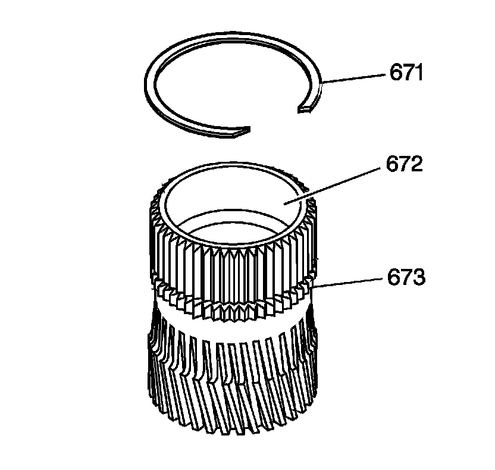
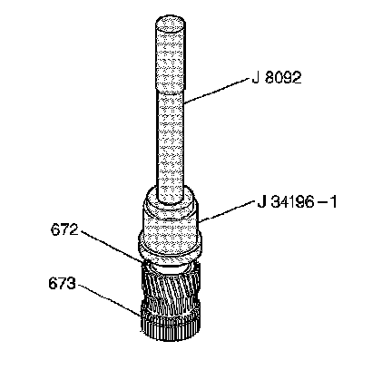
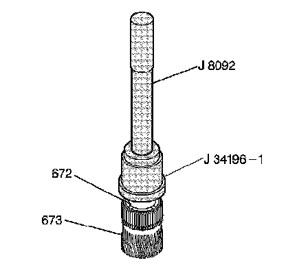
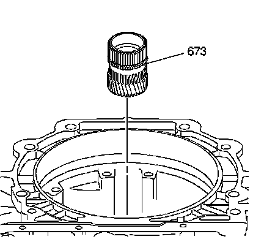
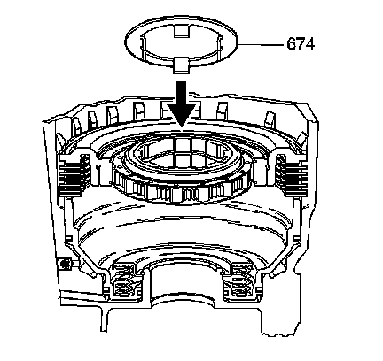

Reaction Sun Gear Installation
Reaction Sun Gear Installation
Tools Required
^ J 34196-B Transmission Bushing Service Set
^ J 8092 Driver Handle
Important: Do not remove the retaining ring (671), except to replace it.

1. Inspect the reaction sun gear (673) for the following defects:
^ Nicks
^ Scores
^ Damaged spline or teeth
^ A worn bushing (672)
^ A loose or weak retaining ring (671)

2. If the reaction sun gear bushing (672) needs replacement, use J 34196-1 which is part of kit J 34196-B with J 8092 to remove the reaction sun bushing (672) from the reaction sun gear (673).

3. Using J 34196-1 which is part of kit J 34196-B with J 8092, install a new reaction sun bushing (672) into the reaction sun gear (673).

4. Install the reaction sun gear (673) into the reaction carrier.

5. Install the thrust washer (674) with the tangs pointing down. Index the tangs of the thrust washer with the splines of the low and reverse roller clutch race.